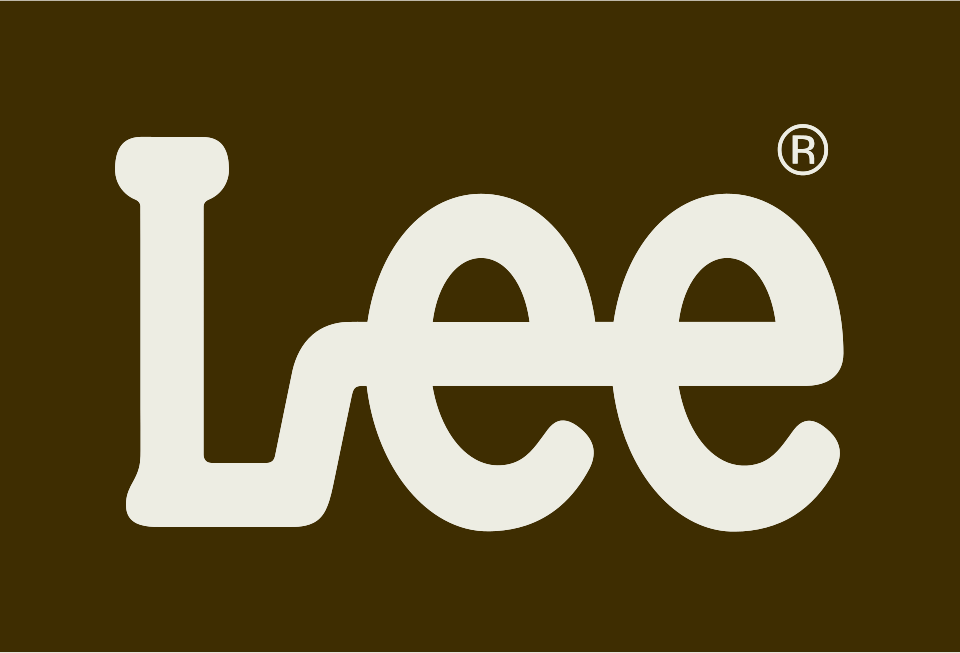

리 Lee
리(Lee)는 1889년 미국 캔자스주 설라이나에서 처음 생산된 데님 청바지 브랜드이다. 캐주얼 의류와 작업복도 생산하며 2019년부터 Kontoor Brands가 소유하고 있다.
최종 업데이트

리는 어떤 브랜드인가
리는 데님 청바지를 중심으로 캐주얼 의류와 작업복을 생산하는 미국의 브랜드이다. 1889년 캔자스주 설라이나에서 처음 생산되었으며, 1930~1940년대에는 미국에서 작업복 분야의 선도적인 제조업체로 자리 잡았다.
1970년대부터는 작업복 중심의 사업에서 벗어나 패션 트렌드에 맞춘 제품에 집중하기 시작했다. 1930년대에 시작된 광고에서 “미국을 만든 청바지(The Jeans that Built America)”라는 슬로건이 탄생했다.
2019년부터 Kontoor Brands가 소유하고 있으며, 같은 해 본사를 캔자스주 메리엄에서 노스캐롤라이나주 그린즈버러로 옮겼다. 미국에 400명 이상의 직원을 두고 있다.
리는 어떻게 시작되고 성장했나
리는 1889년 Henry David Lee가 캔자스주 설라이나에서 H.D. Lee Mercantile Company라는 이름으로 설립했으며, 멜빵바지와 재킷을 생산했다.
1913년에 Union-All 작업용 점프수트를 출시하고 1920년에 첫 오버올을 선보이면서 빠르게 성장했다. 1920년대 후반에는 지퍼 플라이를 도입했고, 이 시기에 어린이용 오버올도 처음 판매했다.
1928년에는 창립자가 사망했으며, 1954년에는 캐주얼 의류 시장으로 사업을 확장했다. 1960년대에는 81개국으로 진출했고, 1969년 VF Corporation에 인수되어 하나의 브랜드가 되었다.
리의 브랜드 아이덴티티는 무엇인가
1889년 캔자스주에서 시작해 작업복에서 캐주얼 데님으로 영역을 넓힌 미국 청바지 브랜드이며, “미국을 만든 청바지”를 슬로건으로 삼는다.
리의 대표 제품과 서비스는 무엇인가
리의 중심 제품은 데님 청바지이며, 캐주얼 의류와 작업복도 생산한다. 초기에는 멜빵바지와 재킷, 작업용 점프수트와 오버올을 만들었다.
1944년에는 Lazy “S”가 Lee 청바지 뒷주머니의 공식 스티치로 채택되었고, Buddy Lee 인형이 홍보용 상품으로 활용되었다. 1970년대에는 Ms.
Lee라는 이름으로 여성을 위한 새로운 핏의 제품을 선보였고, 남녀 아동을 위한 유스웨어 라인도 출시했다.
리는 지금 어떤 상태인가
2019년 Lee, Wrangler, Rock & Republic, VF Outlet이 VF Corporation에서 분리되어 Kontoor Brands로 독립했다. 같은 해 본사를 캔자스주 메리엄에서 노스캐롤라이나주 그린즈버러로 옮겼다.
미국에 400명 이상의 직원을 두고 있으며, 미국 내에서 매년 4천만 달러 이상을 광고에 지출한다.
리 로고는 어떻게 변해왔나
자주 묻는 질문
리는 어느 나라 브랜드인가요?
리는 미국의 패션·럭셔리 브랜드입니다.
리는 언제 설립되었나요?
리는 1889년 설립되었습니다.
리의 브랜드 아이덴티티는 무엇인가요?
1889년 캔자스주에서 시작해 작업복에서 캐주얼 데님으로 영역을 넓힌 미국 청바지 브랜드이며, “미국을 만든 청바지”를 슬로건으로 삼는다.
리의 대표 제품은 무엇인가요?
리의 중심 제품은 데님 청바지이며, 캐주얼 의류와 작업복도 생산한다.
리는 현재 어떤 상태인가요?
2019년 Lee, Wrangler, Rock & Republic, VF Outlet이 VF Corporation에서 분리되어 Kontoor Brands로 독립했다.
리의 창업자는 누구인가요?
리의 창업자는 Harry David Lee입니다(위키데이터 기준).
리의 본사는 어디에 있나요?
리의 본사는 Merriam에 있습니다(위키데이터 기준).
출처와 검증
리 관련 참고: 공식 웹사이트 · 위키데이터 Q1632681 · 한국어 위키백과 · 영어 위키백과. 브랜드명은 한글과 원어를 함께 표기하되 데이터에 없는 표기는 만들지 않습니다. 기원 국가·설립연도는 검수된 정의문에서 확인된 값을 우선하고, 없을 때만 공식 웹사이트 URL이 일치하는 위키데이터 개체의 값을 씁니다. 위키데이터 값은 2026-11-13 기준입니다.